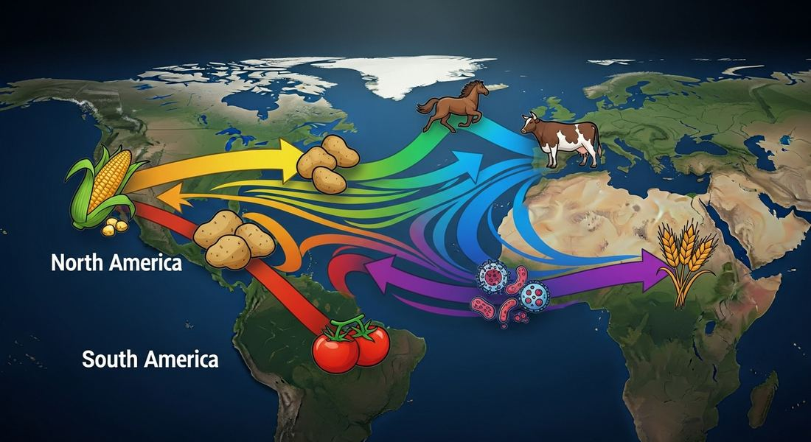

4.3 The Columbian Exchange
- LO-A: What it was — The Columbian Exchange is the name historians give to the massive transfer of plants, animals, diseases, and people between the Eastern Hemisphere (Afro-Eurasia) and the Western Hemisphere (the Americas) that began with Columbus's 1492 voyage. After approximately 12,000 years of biological isolation, two worlds suddenly merged — with consequences that reshaped global populations, diets, ecologies, and economies permanently. Disease: the catastrophic direction — The most immediately devastating transfer was disease from the Eastern Hemisphere to the Americas. Smallpox, measles, typhus, malaria, and influenza — all endemic in Afro-Eurasia — arrived in populations that had zero immune experience with them. Indigenous American death rates ranged from 50% to 90% in the decades after contact, representing one of the greatest demographic catastrophes in human history. Disease vectors — mosquitoes and rats — also transferred, amplifying the impact. Food crops: the beneficial direction — American food plants (potatoes, maize/corn, tomatoes, cacao, sweet potatoes, manioc/cassava) transferred to Afro-Eurasia over the 16th–18th centuries and permanently changed diets and population dynamics. The potato became a staple crop in Ireland, Germany, and Russia; maize spread across Africa and China; tomatoes transformed Italian cuisine. These calorie-dense crops supported population growth across Afro-Eurasia — the opposite effect from what disease did to the Americas. Animals and Old World crops to Americas — Horses, cattle, pigs, sheep, and goats went from Afro-Eurasia to the Americas, transforming indigenous economies and warfare. Sugar cane, wheat, rice, and coffee from Afro-Eurasia became cash crops in the Americas, cultivated on plantations using enslaved African labor — connecting the Columbian Exchange to the slave trade. Foods carried by enslaved Africans (okra, rice) also became part of American agriculture.
Try each question before revealing the answer.
1. Why were indigenous Americans so vulnerable to Old World diseases, while Old World populations were much less vulnerable to American diseases?
2. The potato originated in the Andes (South America) but became a dietary staple across Ireland, Germany, Russia, and parts of Africa. What does this pattern reveal about how food crops spread and why they were adopted?
3. Horses went extinct in the Americas approximately 10,000 years ago and were reintroduced by Spanish colonizers in the 1500s. How did the reintroduction of horses transform indigenous cultures on the Great Plains of North America?
4. Sugar cane originated in Southeast Asia, was cultivated in the Middle East and Mediterranean before 1492, and then became the dominant cash crop of the Caribbean and Brazil by 1600. How does sugar's history illustrate the connection between the Columbian Exchange and the Atlantic slave trade?
5. Historians estimate that some indigenous American populations declined by 50–90% in the century after European contact. Why is disease — rather than direct violence — now considered the primary cause of this demographic catastrophe?
- Explain the causes of the Columbian Exchange and its effects on the Eastern and Western Hemispheres
Tap a term for its definition.
-
Definition: The massive transfer of plants, animals, diseases, and people between the Eastern and Western Hemispheres following Columbus's 1492 voyage. Significance: One of the most consequential biological events in human history; permanently reshaped diets, populations, ecologies, and economies on every continent.
-
Definition: A highly contagious viral disease endemic in Afro-Eurasia that was carried to the Americas by European colonizers, causing catastrophic mortality among indigenous populations with no prior exposure. Significance: AP exam-named disease; killed an estimated 30–90% of some indigenous American populations within decades of first contact; was the primary driver of the demographic catastrophe that made European colonization of the Americas possible.
-
Definition: A catastrophic decline in a population, typically caused by disease, violence, or famine. Significance: Indigenous American populations experienced one of history's most severe demographic collapses following contact with Afro-Eurasian diseases; some estimates put total population loss at 50–90% within a century of contact.
-
Definition: A large agricultural estate producing a cash crop (sugar, tobacco, cotton) using coerced labor, typically enslaved Africans. Significance: The central institution of the colonial American economy; the demand for plantation labor drove the massive expansion of the Atlantic slave trade; connected the Columbian Exchange (Old World crops in American soil) to the slave trade (African labor to work those crops).
-
Definition: An agricultural product grown primarily for sale and export rather than local subsistence. Significance: Sugar, tobacco, cotton, and coffee were the major cash crops of colonial Americas; their profitability drove the plantation system and the demand for enslaved labor.
-
Definition: An organism that transmits disease from one host to another; in the context of the Columbian Exchange, mosquitoes (malaria, yellow fever) and rats (plague) were key vectors transferred to the Americas. Significance: AP exam-specified category; the transfer of disease vectors alongside human diseases amplified the epidemiological impact of European contact with the Americas.
-
Definition: A starchy root vegetable originating in South America that became a dietary staple across tropical Africa after the Columbian Exchange. Significance: An example of an American food crop transforming Afro-Eurasian agriculture and supporting population growth — the positive direction of the exchange for Afro-Eurasia.
-
Definition: A Spanish colonial labor system granting settlers the right to demand labor from indigenous people in exchange for "protection" and Christian instruction. Significance: One of the AP exam's-named labor systems introduced in the Americas; effectively a form of forced labor that decimated already disease-reduced indigenous populations; eventually replaced by other labor systems as indigenous population collapsed.
🌍 Two Worlds Meet — The Biological Consequences
For approximately 12,000 years, the Eastern Hemisphere (Afro-Eurasia) and the Western Hemisphere (the Americas) were biologically isolated from each other. Separated by two oceans, they evolved distinct plants, animals, and disease ecosystems. When Columbus's ships arrived in 1492, they ended that isolation permanently — triggering what the historian Alfred Crosby called the Columbian Exchange.
The exchange was not symmetric. It was not a simple swap of interesting novelties. It was a massive, chaotic collision of biological systems that had spent 12,000 years evolving independently, with consequences that ranged from catastrophic (for indigenous Americans) to transformative (for global food supplies and population growth).

Image credit not specified.
The Columbian Exchange: the Americas sent food crops, tobacco, and (possibly) syphilis to Afro-Eurasia; Afro-Eurasia sent diseases, animals, crops, and enslaved Africans to the Americas. The exchange was enormous in scale but deeply asymmetric in consequences. AI-generated illustration (Google Gemini, 2025), commercially licensed.
☠️ Disease: The Catastrophic Transfer (East → West)
The most immediately devastating component of the Columbian Exchange was disease. Smallpox arrived in Hispaniola within years of Columbus's first voyage. By 1520, it had reached the Aztec heartland. By 1525, it had spread to the Inca Empire — killing the Inca emperor Huayna Capac and triggering a civil war — years before Francisco Pizarro arrived with his conquistadors.
Smallpox was just the beginning. Measles, typhus, influenza, bubonic plague, and malaria followed in successive waves over the following century. Indigenous Americans had zero prior exposure to these diseases — and therefore zero immunological defense. Death rates in many regions ran between 50% and 90% in the first century after contact.
The AP exam specifically names mosquitoes and rats as disease vectors transferred to the Americas. This is important: it wasn't just human diseases that transferred. Mosquitoes carrying Plasmodium falciparum (the parasite causing the most deadly form of malaria) arrived from Africa via the slave trade, transforming the disease ecology of the Caribbean and lowland Americas. Rats carrying plague and other diseases stowed away on every ship. These vector transfers extended and amplified the epidemiological disaster.
🥔🌽 Food Crops: The Transformative Transfer (West → East)
The most beneficial direction of the Columbian Exchange — for Afro-Eurasia — was the transfer of American food crops. Over the 16th–18th centuries, a suite of American plants entered Afro-Eurasian agriculture and permanently changed diets, population dynamics, and land use across three continents.
🐄🐴 Animals: Afro-Eurasia to the Americas
Animals transferred primarily from Afro-Eurasia to the Americas, and their impact on indigenous cultures was complex — transformative in some cases, devastating in others.
The College Board specifically names horses, pigs, and cattle as animals brought by Europeans to the Americas. Each had distinct consequences:
- Horses — Extinct in the Americas for 10,000 years; reintroduced by Spanish colonizers. By the 17th–18th centuries, horses had spread to indigenous Great Plains peoples (through trade and raids rather than European gift), transforming the economics and warfare of Plains cultures. The Comanche became one of the most powerful military forces in North America specifically because of their mastery of horse warfare.
- Cattle and Pigs — Quickly went feral across the Americas, providing food for both colonizers and indigenous peoples but also competing with indigenous fauna and, where they escaped into forests, damaging ecosystems. Spanish cattle ranching created the economic foundation for the Spanish borderlands in North America.
- Sheep — Adopted enthusiastically by Navajo and other Pueblo peoples in the American Southwest, who incorporated sheep herding into their economies and created the distinctive Navajo textile traditions that persist today.
🌾 Old World Crops and the Plantation System
The College Board also emphasizes the transfer of Afro-Eurasian crops to the Americas — specifically the cash crops that drove colonial economies. Sugar cane (originally from Southeast Asia, long cultivated in the Mediterranean) was transplanted to the Caribbean and Brazil, where the combination of tropical climate, fertile soil, and (after indigenous population collapse) enslaved African labor made it extraordinarily profitable.
Sugar was the economic engine of the early Atlantic economy. Caribbean and Brazilian sugar plantations generated more wealth per acre than any other agricultural enterprise in the world. The demand for plantation labor — which indigenous Americans could not supply in sufficient numbers after epidemic disease — drove the massive expansion of the Atlantic slave trade. By 1700, approximately 60% of all enslaved Africans transported across the Atlantic were going to sugar-producing regions.
The College Board specifically notes that foods brought by enslaved Africans (okra, varieties of rice, black-eyed peas) also entered American agriculture. Enslaved people did not simply labor in fields — they brought agricultural knowledge and food traditions that permanently became part of American culture.
Nothing added yet. To attach a Google NotebookLM audio overview, video overview, or infographic to this topic: open this file — build/data/content/ap-world-history/4-3.json — and add an entry to notebookLmResources with a title and a shareable link (or paste an embed <iframe> directly into this block in the generated HTML file if you're editing the page by hand instead).
- A) The deliberate use of biological warfare by Spanish colonizers against indigenous populations
- B) The superior military technology of Spanish conquistadors compared to indigenous Caribbean peoples
- C) The transfer of Afro-Eurasian diseases to populations with no prior immunological exposure, producing catastrophic mortality
- D) The ecological impact of introduced Old World animals on Caribbean ecosystems
- A) The environmental damage caused by the introduction of American agricultural practices to European climates
- B) How American food crops supported population growth in parts of Afro-Eurasia by increasing caloric production per acre
- C) The deliberate policy of English colonial administrators to improve Irish food security
- D) The replacement of traditional Afro-Eurasian crops by American varieties across most of Europe
- A) How the Columbian Exchange's demographic collapse of indigenous Americans contributed to the expansion of the Atlantic slave trade
- B) How competition between European colonial powers drove the demand for enslaved labor
- C) How Spanish colonial policy deliberately replaced indigenous labor with African enslaved workers
- D) How the physical demands of sugar production were unique compared to other forms of agricultural labor
- A) Spanish colonial policy of distributing horses to indigenous allies to strengthen military partnerships
- B) The ecological damage caused by large domesticated animals competing with native American bison herds
- C) The inability of European powers to maintain control over their livestock in North American colonial settings
- D) How transfers of Old World animals through the Columbian Exchange could transform indigenous American societies in ways not planned by European colonizers
- A) The Columbian Exchange had exclusively positive consequences for African populations
- B) American food crops spread across Afro-Eurasia through existing trade networks and improved food security in regions that adopted them
- C) Portuguese missionaries spread American crops to Africa as part of a deliberate agricultural development program
- D) African farmers were slow to adopt American crops due to cultural resistance to foreign agricultural practices
Answer all three parts.
Part A
Explain ONE way the Columbian Exchange negatively affected indigenous populations in the Western Hemisphere.
Part B
Explain ONE way the Columbian Exchange benefited populations in the Eastern Hemisphere.
Part C
Explain ONE connection between the Columbian Exchange and the expansion of the Atlantic slave trade.
A strong thesis acknowledges complexity: some populations experienced catastrophic harm; others experienced genuine benefit. Your thesis should make a judgment about the overall balance while acknowledging both directions.
📝 My Notes (edit this yourself — no AI needed)
This box is yours. Open this page's HTML file directly (in GitHub's editor or any text editor), find the <!-- MY-NOTES-START --> comment below, and type between the markers — corrections, extra context for this year's students, a link, anything. Changes show up as soon as you save and re-publish the file — nothing else on the page will change.
(Add your own notes, corrections, or extra context here.)